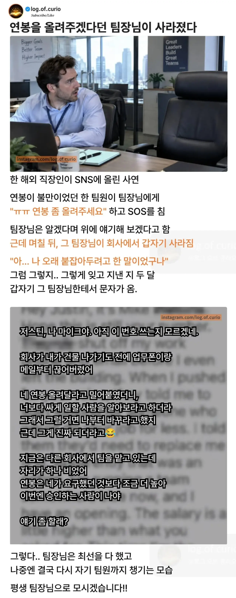
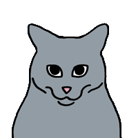

https://www.fmkorea.com/best/10544814549

https://www.fmkorea.com/best/10544814549

쟤넨 저게 그렇게 특이케이스가 아님. 사실상 cic가 표준 모델이라서.
저 상황에 중요한 부분은 팀장이 예산권이 있느냐 아니냐인데 쫓겨난 다음 이직한 곳에선 그게 있나보네. 쫓아갈지 말지는 인상된 연봉이 지금 현직장에 머무를 메리트보다 높다면 가면 됨
cic가뭔데....
양놈들, 특히 미국놈들은 일종의 점조직 형태의 매트릭스 구조로 각 팀들이 회사안의 하나의 조그만 회사처럼 움직임(Company in Company)
이게 뭘 의미하냐면 그 팀의 수장이 인사권과 예산권을 행사한다는 말임. 즉 누구한테 얼마를 왜 주는가를 기준으로 팀을 운영하는거야. (거기에 팀을 운영하기 위한 다른 예산들, 예를 들면 공용장비 등 까지 포함한 운영권을 가짐)
그게 이런저런 규모로 크고 작게 쭉~~ 있고 각 팀장 그 위 그 위 그 위 조직장들은 각각의 하이어라키가 같은 규모의 조직장들끼리 피어그룹을 만들고 서로 협의, 합의, 협업 혹은 경쟁하면서 더 큰 규모의 일이 굴러가게됨
즉 저 팀장은 기존 회사에서는 팀원들 샐러리를 결정할 권한이 없고 피플 매니징만하는 사람이었다는거. 이직하고는 예산권도 얻은거지.
아니 양놈들은 회사도 봉건제 구조네 ㅋㅋㅋㅋㅋㅋㅋ
쟤네 고용구조가 유연하다는건 저런 기반이 있어서 가능한거. 한국식 고용구조는 한국 환경에 더 잘맞음.
미국은 원래 링크드인 나오기 전부터도 인맥이 아주 중요하고 인사 담당자한테 다짜고짜 날품팔이 하는 한국하고는 다른 형태의 스타트라인이 보편화 되어서 고용과 해고가 자유로운게 지들한테 잘맞는거임.
우리는 들어가기가 더 어려운 대신 한번 들어가면 뽑는 행위 자체를 회사가 보증하고 책임지기 때문에 안정성이 더 높은거. 대신 니 옆에 그 개새끼도 어지간하면 짤리지 않는다는 단점이 존재..
cic가 봉건제라니까 갑자기 존나 확 와닿네 와
그와중에도 우리는 중앙집권이고 쟤네는 봉건적이구나 시발……… 대가리 존나 세게 맞은 기분이다
오 봉건제 이해가 확 되네. ㅋㅋㅋㅋㅋ
가스라이팅은 ㅋㅋㅋ 선능력 개선 후 연협이 아닌곳이
어디있더냐 ㅋㅋㅋ
팀장이 존나 능력자네
저스틴도 좋은 사람이였나보다
저스틴, 우선은 캄보디아를 경유해서 영국으로와줘
일단 프놈펜 공항에서 내리면 회색 밴이 숙소로 데려다줄거야


AI 컨텐츠 같은데.. 뭔가 이제 이런 썰 피로하다 ㅋㅋㅋ
그럼 그냥 웃고 넘겨.
저게 진실인지 거짓인지 판단하는게 정말 중요한건 아니잖아
피곤하면 안피곤해하면 돼
ai썰맞을거임 파딱특유의 주작ai slop썰
걍 보고 "파딱에미뒤진년 니에미"만 마음속으로 읊고 넘기면됨
형님!
나도 이전 팀장이 몇년동안 적게 받는다고 많이 챙겨줌
근데 저런 팀장있으면 계속 따라댕겨야지 ㅋㅋㅋ
충성충성
팀장님 평생 모시겠습니다
속는 사람 없제
업계따라 우리나라에서도 흔함
게임업계가 저럼
면담해서 우르르 데리고 나가잖어 ㅋㅋㅋ
그래서 XX사단 이라는 말이있지
저 정도면 엉덩이 대줄수있다 .....
테스트 드라이브 플리즈
혼모노 팀장이다
참된 리더
저러면 평생 따른다
씻고올게요 팀장님
? : 날 쏘고가라!
?? : 탕!!
Ai 슬롭
저게 진짜면 감동 먹을수밖에 없다
저런 사람 있으면 평생 따라야지
또 ai똥글
가능하긴 하지
내가 그런 케이스임.
연봉 때문에 팀장님이 윗선이랑 엄청 싸웠는데도 해결이 안됨.
그래서 내가 직접 쳐들어가서 싸웠는데도 해결이 안됐음. 사실 ㅈ밥이 가서 싸워봐야 될리도 없었음.
팀장님 회사 그만두시고 한 달 뒤에 치맥 하자고 연락오심.
이직 제안 받아서 이직하셨고 이직 조건 중에 하나가 자기 인원 2명 데리고 오는거였음.
연봉도 인상하고 직급도 하나 올리고 이직 했음.
우리 나라도 개발 쪽은 파트나 팀 단위로 이동하는 경우가 꽤 많음.
연봉 올려 준다던 팀장이 먼저 좇겨나는 게 진짜 현실 반전임
이건 충성해야지
저딴게 팀장이냐? ㅂㅅ들..
아버지!!!!
미국은 저렇게 해서 자기 팀을 꾸릴수 있느냐도 굉장히 중요한 능력으로 봄. 특히나 위로 올라갈수록
오늘부터 형님으로 모시겠습니다
난 또 팀장이 나가면서 '오늘부터 네가 팀장이야, 어때 연봉이 올랐지?' 한 건줄 ㅎ
드라마에나 나올법한 팀장이네
보통의 팀장은 지금 너는 돈이 중요한게 아니라 실력을 기르는게 우선이다 내가 니 나이때는 하면서 가스라이팅 하는 게 정석임